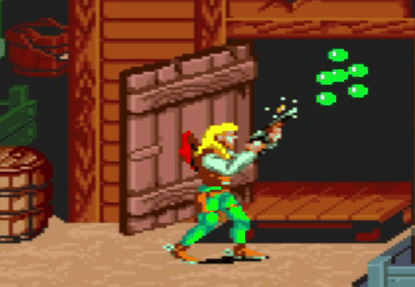

Bob teria tudo para ser um red neck, confederado, nacionalista, não fosse pela sua inteligência.
Os últimos anos como membro da Sunset Riders fez com que Bob, assim como todos os outros membros, desenvolvessem suas habilidades, tanto na caçada aos fora da lei, quanto ao conhecimento de mundo.
Contudo, Bob recebeu a missão de investigar algumas pistas referentes a Sir Richard Rose, o grande magnata que assola esta região.
Por hora a missão de Bob é simples: Reunir informações de forma discreta.
Por onde deseja começar?
